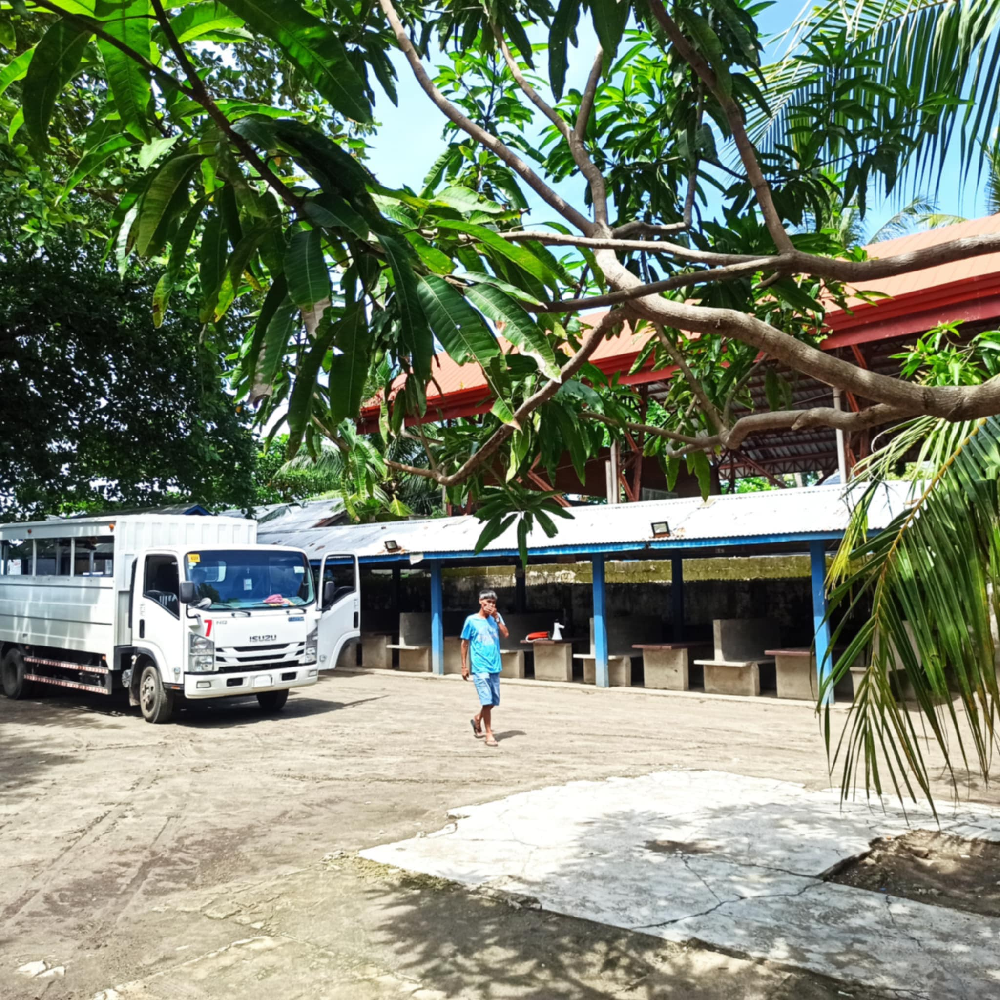
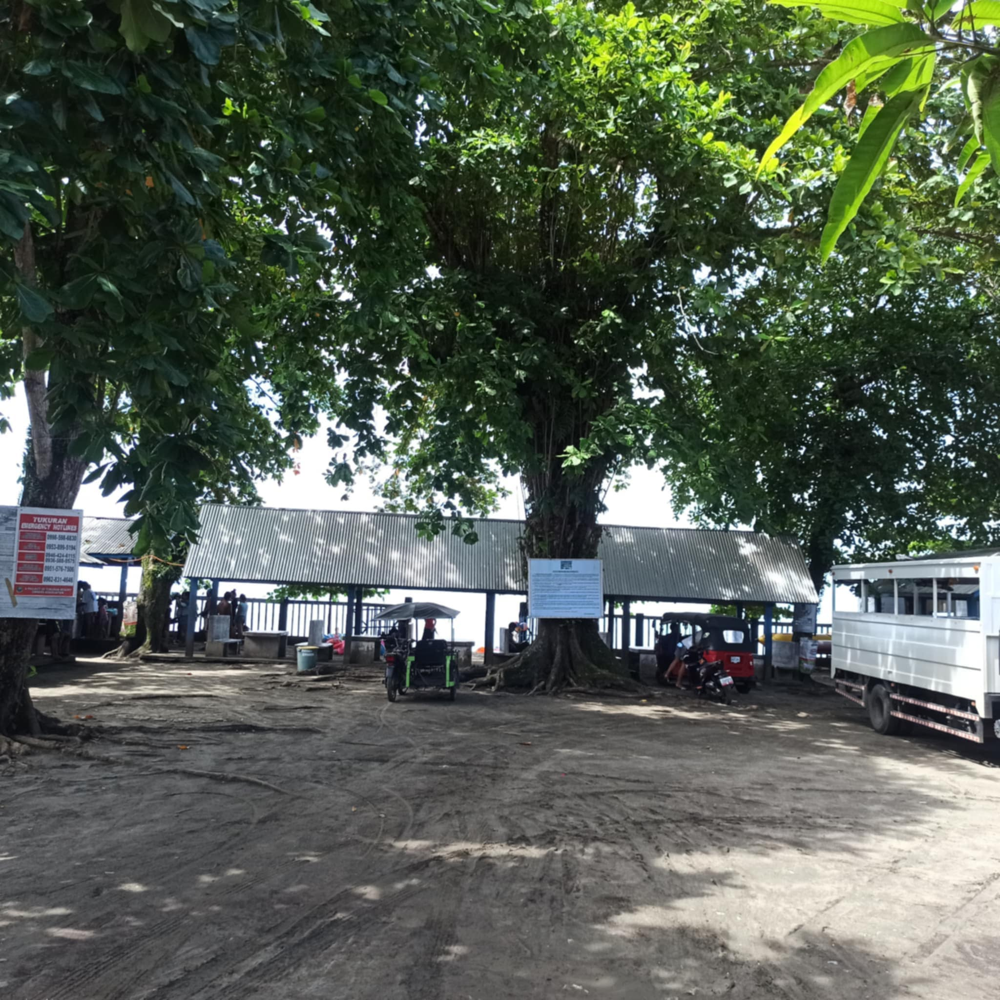
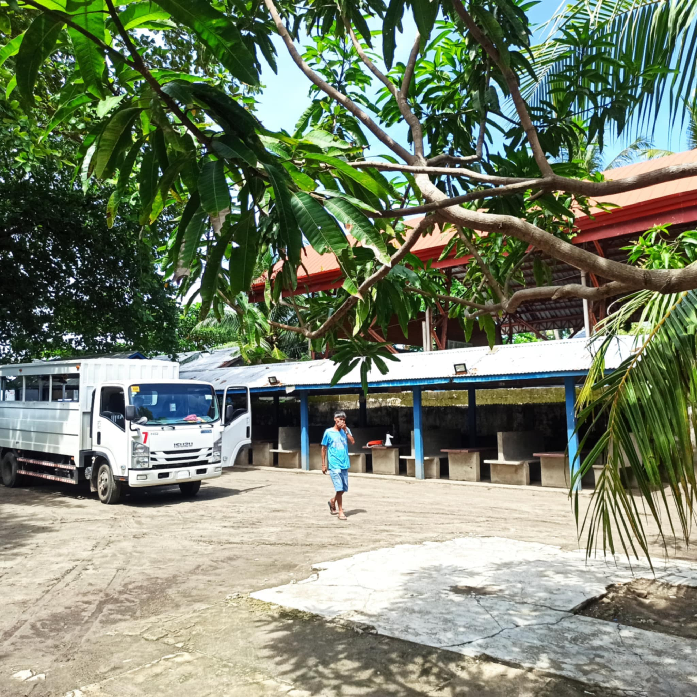
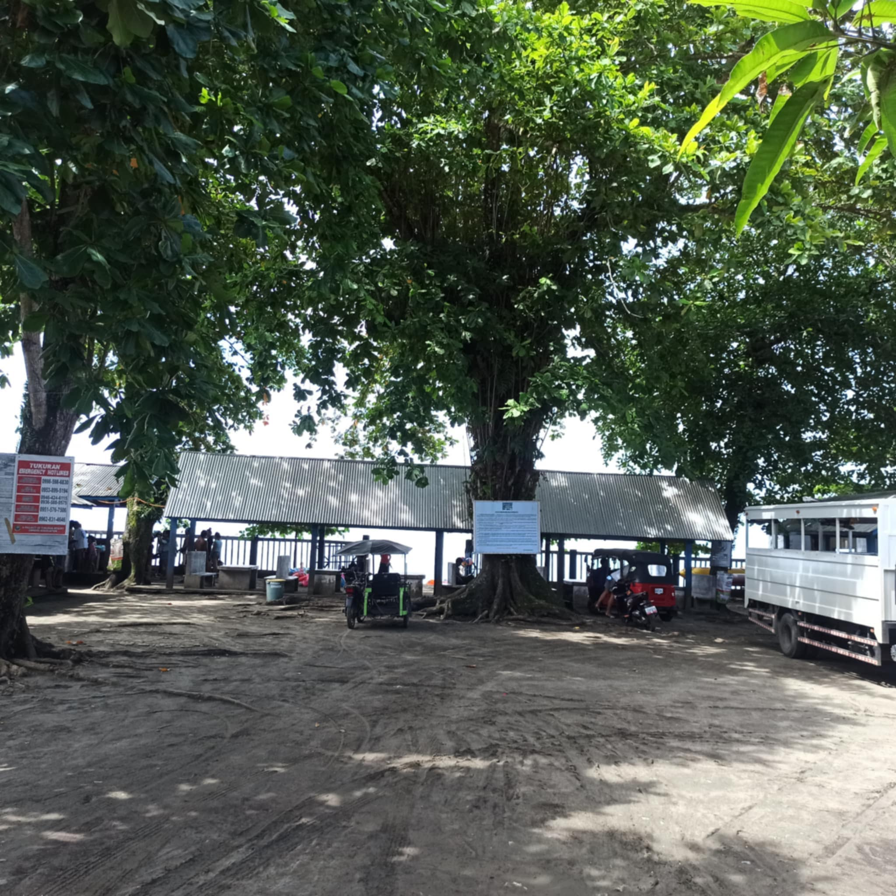

CRISHAMAE BEACH RESORT
Facilities
PARKING AREA
This spacious parking area is located near the main terminal, shaded by large trees for a comfortable and cool environment. The ground is natural soil, allowing for ample parking space for different types of vehicles, including cars, motorcycles, and tricycles.
COTTAGE
Enjoy a comfortable and breezy seaside experience at our spacious concrete cottages! ✅ Rate: ₱400 per cottage ✅ Features: Durable concrete tables and benches Shaded by a strong galvanized roof Scenic ocean view Located close to the shoreline for easy access Trash bin available to keep the surroundings clean
Cooking area
Our dedicated cooking area is equipped with spacious concrete counters and sturdy roofed spaces, perfect for preparing your meals during your stay. ✅ Features: Concrete cooking stations with ample working space Shaded area for a comfortable cooking experience Nearby water source and trash bins for cleanliness Open surroundings with natural breezes Safe and family-friendly setup for group cooking Whether you’re grilling, preparing seafood, or simply setting up a picnic, this cooking area provides a practical and hygienic space to make your meal preparations enjoyable.
SHOWER area
Refresh yourself after a swim at our clean and convenient shower area! ✅ Features: Running water for a quick and easy rinse Open-air design surrounded by nature Nearby changing and restroom facilities Conveniently located for quick access after swimming Eco-friendly setup — please help conserve water! We encourage everyone to use the showers before heading home or enjoying the rest of the facilities to keep you feeling clean and comfortable.
Gallery


 


